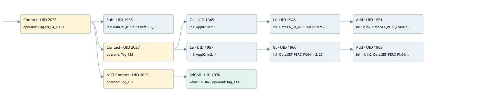

dp-01 control loop
filter · 검색 색인 순서 20 · 원본 내부 NID 추정 19
백업 PLF 원본의 2750415 바이트 위치에서 복원한 XML. 검색 문서 1901의 객체 키 161022004811000000000000와 연결했다. 이름 해석 22/22개. 남은 RefId는 상수 또는 미해석 참조다.
연결 구조 다시 그리기
원본 Part/PCon/Wire를 이용한 연결도다. TIA 화면의 래더 배치 또는 실행 결과를 재현한 그림은 아니다. 핀 연결은 아래 표와 원본 XML을 기준으로 읽는다. 노드 위에 마우스를 두면 피연산자 이름을 볼 수 있다.

접점·코일·블록과 피연산자
| Part UID | Gate | Negated 핀 | 연결 피연산자 |
|---|---|---|---|
| 2025 | Contact | operand = Flag.FN_04_AUTO | |
| 1935 | Sub | in1 = Data.PC_01; in2 = Coeff.SET_PC01; out = App02 | |
| 2027 | Contact | operand = Tag_133 | |
| 1945 | Ge | in1 = App02; in2 = 5 | |
| 1948 | Lt | in1 = Data.FN_04_ASPIRATOR; in2 = 250 | |
| 1951 | Add | in1 = 1; in2 = Data.SET_PERC_FN04; out = Data.SET_PERC_FN04 | |
| 1957 | Le | in1 = App02; in2 = -1 | |
| 1960 | Gt | in1 = Data.SET_PERC_FN04; in2 = 20 | |
| 1963 | Add | in1 = -1; in2 = Data.SET_PERC_FN04; out = Data.SET_PERC_FN04 | |
| 2029 | Contact | operand | operand = Tag_133 |
| 1970 | SdCoil | value = S5T#4S; operand = Tag_133 |
접점 경로를 펼친 조건식
Contact·O/A·비교기의 원본 연결을 읽기 쉽게 펼친 보조 해석이다. POWER는 전원 레일 시작을 뜻한다. 호출 블록·에지·타이머의 내부 동작과 다중 쓰기 순서는 이 표로 실행 검증하지 않았다. 미해석 핀과 RefId는 원문 연결표에서 확인한다.
| UID | 동작 | 대상 | 원본 접점 경로 | 내용 |
|---|---|---|---|---|
| 1970 | SdCoil | Tag_133 | (Flag.FN_04_AUTO AND NOT [Tag_133]) | 시간 동작 SdCoil; 타이머 의미 추가 확인 / 시간 인자 S5T#4S |
원본 배선 연결
| Wire UID | 동일 Wire 연결 끝점 |
|---|---|
| 2031 | Powerrail {} ↔ Part 2025.in |
| 1994 | ORef 1972 (Flag.FN_04_AUTO) ↔ Part 2025.operand |
| 2026 | Part 2025.out ↔ Part 1935.en ↔ Part 2027.in ↔ Part 2029.in |
| 1995 | ORef 1973 (Data.PC_01) ↔ Part 1935.in1 |
| 1996 | ORef 1974 (Coeff.SET_PC01) ↔ Part 1935.in2 |
| 1997 | Part 1935.out ↔ ORef 1975 (App02) |
| 1998 | ORef 1976 (Tag_133) ↔ Part 2027.operand |
| 2028 | Part 2027.out ↔ Part 1945.pre ↔ Part 1957.pre |
| 22 | ORef 24 (App02) ↔ Part 1945.in1 |
| 23 | ORef 25 (5) ↔ Part 1945.in2 |
| 21 | Part 1945.out ↔ Part 1948.pre |
| 2002 | ORef 1979 (Data.FN_04_ASPIRATOR) ↔ Part 1948.in1 |
| 2003 | ORef 1980 (250) ↔ Part 1948.in2 |
| 2004 | Part 1948.out ↔ Part 1951.en |
| 2006 | ORef 1981 (1) ↔ Part 1951.in1 |
| 2007 | ORef 1982 (Data.SET_PERC_FN04) ↔ Part 1951.in2 |
| 2008 | Part 1951.out ↔ ORef 1983 (Data.SET_PERC_FN04) |
| 27 | ORef 29 (App02) ↔ Part 1957.in1 |
| 28 | ORef 30 (-1) ↔ Part 1957.in2 |
| 26 | Part 1957.out ↔ Part 1960.pre |
| 2012 | ORef 1986 (Data.SET_PERC_FN04) ↔ Part 1960.in1 |
| 2013 | ORef 1987 (20) ↔ Part 1960.in2 |
| 2014 | Part 1960.out ↔ Part 1963.en |
| 2016 | ORef 1988 (-1) ↔ Part 1963.in1 |
| 2017 | ORef 1989 (Data.SET_PERC_FN04) ↔ Part 1963.in2 |
| 2018 | Part 1963.out ↔ ORef 1990 (Data.SET_PERC_FN04) |
| 2021 | ORef 1992 (Tag_133) ↔ Part 2029.operand |
| 2030 | Part 2029.out ↔ Part 1970.in |
| 2020 | ORef 1991 (S5T#4S) ↔ Part 1970.value |
| 2023 | ORef 1993 (Tag_133) ↔ Part 1970.operand |
식별자 해석 근거 22개
| ORef UID | RefId | 이름 | IdentXmlPart 파일 | 해석 방법 |
|---|---|---|---|---|
| 1972 | 254 | Flag.FN_04_AUTO | 0596-IdentXmlPart.xml | UID/RID + search-text + NID agreement |
| 1973 | 256 | Data.PC_01 | 0596-IdentXmlPart.xml | UID/RID + search-text + NID agreement |
| 1974 | 257 | Coeff.SET_PC01 | 0596-IdentXmlPart.xml | UID/RID + search-text + NID agreement |
| 1975 | 258 | App02 | 0598-IdentXmlPart.xml | UID/RID + search-text + NID agreement |
| 1976 | 259 | Tag_133 | 0594-IdentXmlPart.xml | UID/RID + search-text + NID agreement |
| 24 | 258 | App02 | 0598-IdentXmlPart.xml | UID/RID + search-text + NID agreement |
| 25 | 311 | 5 | 0597-IdentXmlPart.xml | literal candidate: UID/RID/NID + nearby named declarations + search-text agreement |
| 1979 | 262 | Data.FN_04_ASPIRATOR | 0596-IdentXmlPart.xml | UID/RID + search-text + NID agreement |
| 1980 | 263 | 250 | 0597-IdentXmlPart.xml | literal candidate: UID/RID/NID + nearby named declarations + search-text agreement |
| 1981 | 70 | 1 | 0597-IdentXmlPart.xml | literal candidate: UID/RID/NID + nearby named declarations + search-text agreement |
| 1982 | 252 | Data.SET_PERC_FN04 | 0596-IdentXmlPart.xml | UID/RID + search-text + NID agreement |
| 1983 | 252 | Data.SET_PERC_FN04 | 0596-IdentXmlPart.xml | UID/RID + search-text + NID agreement |
| 29 | 258 | App02 | 0598-IdentXmlPart.xml | UID/RID + search-text + NID agreement |
| 30 | 265 | -1 | 0597-IdentXmlPart.xml | literal candidate: UID/RID/NID + nearby named declarations + search-text agreement |
| 1986 | 252 | Data.SET_PERC_FN04 | 0596-IdentXmlPart.xml | UID/RID + search-text + NID agreement |
| 1987 | 110 | 20 | 0597-IdentXmlPart.xml | literal candidate: UID/RID/NID + nearby named declarations + search-text agreement |
| 1988 | 265 | -1 | 0597-IdentXmlPart.xml | literal candidate: UID/RID/NID + nearby named declarations + search-text agreement |
| 1989 | 252 | Data.SET_PERC_FN04 | 0596-IdentXmlPart.xml | UID/RID + search-text + NID agreement |
| 1990 | 252 | Data.SET_PERC_FN04 | 0596-IdentXmlPart.xml | UID/RID + search-text + NID agreement |
| 1992 | 259 | Tag_133 | 0594-IdentXmlPart.xml | UID/RID + search-text + NID agreement |
| 1993 | 259 | Tag_133 | 0594-IdentXmlPart.xml | UID/RID + search-text + NID agreement |
| 1991 | 267 | S5T#4S | 0597-IdentXmlPart.xml | literal candidate: UID/RID/NID + nearby named declarations + search-text agreement |
검색 코드 보조 자료
참조 명칭을 찾기 위한 자료이며 실행 순서나 AND/OR 관계는 위 연결표로 확인한다.
"flag".fn_04_auto sub "data".pc_01 "coeff".set_pc01 "tag_133" #app02 5 "data".fn_04_aspirator 250 add 1 "data".set_perc_fn04 #app02 -1 "data".set_perc_fn04 20 add -1 "data".set_perc_fn04 "data".set_perc_fn04 "data".set_perc_fn04 "tag_133" "tag_133" s5t#4s #app02